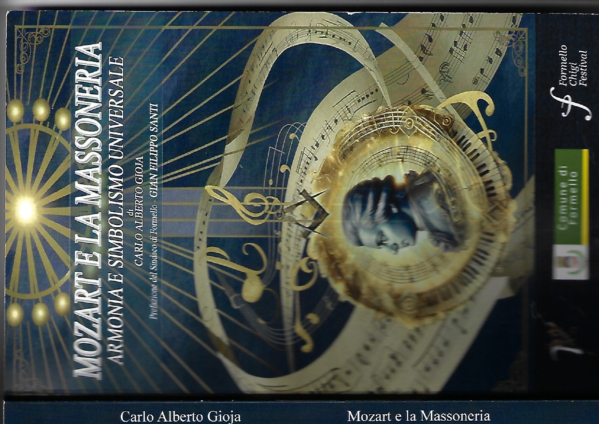

Pubblicazione · Officine Culturali Romane · Collana Ermes

Acquista su AmazonIl libro
Wolfgang Amadeus Mozart non è stato solo un compositore di straordinario genio: fu anche un uomo profondamente immerso in una corrente spirituale e iniziatica che ha lasciato tracce indelebili nella sua opera — la Massoneria.
Questo volume offre un viaggio affascinante nell'universo interiore di Mozart, rivelando come i princìpi di fratellanza, uguaglianza e conoscenza abbiano permeato ogni aspetto della sua produzione artistica — dalle opere più celebri alle composizioni massoniche meno note, fino alle ultime, misteriose creazioni.
Attraverso un'analisi approfondita e rigorosa, il testo esplora il dialogo tra Mozart e i grandi compositori massoni suoi contemporanei — Haydn, Beethoven, Liszt — e le figure dei pensatori illuminati che ne influenzarono il pensiero. Un'opera che intreccia storia, filosofia, simbologia e musicologia in una narrazione avvincente, accessibile tanto agli specialisti quanto agli appassionati.
«La musica di Mozart non è soltanto suono: è geometria dell'anima, architettura del pensiero, codice di un linguaggio universale che trascende il tempo e la cultura. Comprendere la sua relazione con la Massoneria significa cogliere la profondità di un genio che cercò, attraverso le note, di esprimere l'inesprimibile.»
— Carlo Alberto Gioja
Un libro che parla a musicisti, storici, filosofi e a chiunque ami l'arte di un compositore che ha saputo trasformare la ricerca spirituale in bellezza sonora senza tempo. Con la prefazione del Sindaco di Formello Gian Filippo Santi, il volume è inserito nella Collana Ermes delle Officine Culturali Romane.
L'iniziazione massonica di Mozart nel 1784 e il suo rapporto con la Loggia "Zur Wohltätigkeit" di Vienna.
Il Flauto Magico, la Musica Massonica K. 477 e i codici nascosti nel linguaggio musicale mozartiano.
Il dialogo tra musica, filosofia illuminista e ideali massonici di fratellanza, libertà e conoscenza.